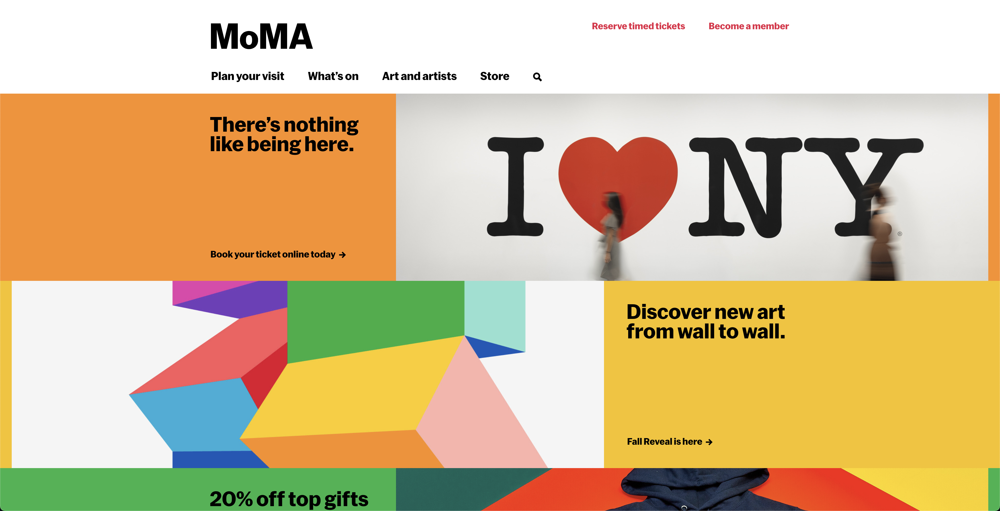
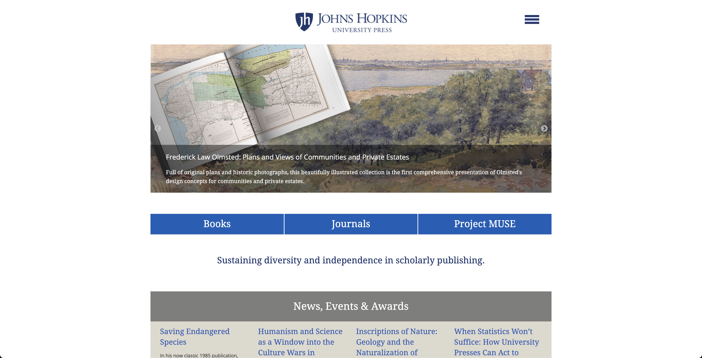
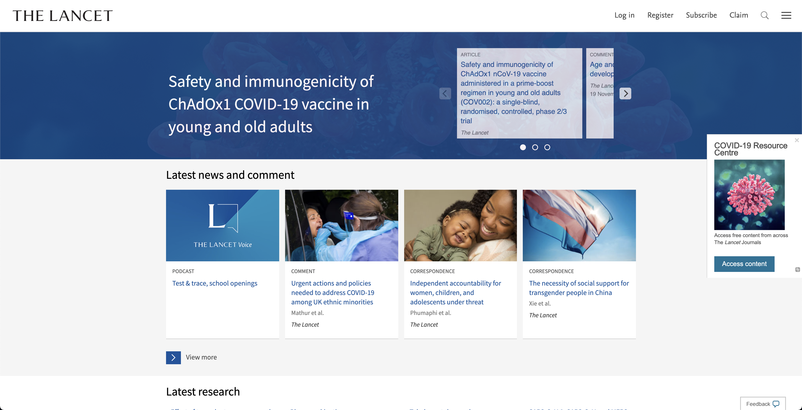
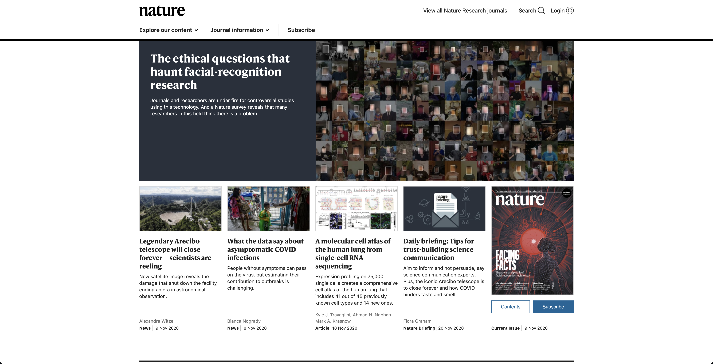

The concept for the Health + Politics Journal was to bring awareness to the intersection of how public health concerns must coalesce with politics and the subsequent challenges of such a connection.
The initial health article chosen, focuses on the social implications of blood donation in Australia. This, juxtaposed with the second article examining political agenda in health policies in England helps to illustrate the challenges public health must overcome, with particular emphasis on developed nations. The solution to such challenges is design; thus, the third article which explores design as a mediator.
Health + Politics Journal aims to be accessible to a non-academic audience. Whilst the content is inevitably suited towards those with the appropriate credentials, the overall feel of the website aims to be approachable in order to draw attention to the issue of health and politics. This is achieved through a number of conscious design solutions.
The use of Helvetica font family and the various styles, subscribes to a contemporary audience and is a refreshing style for academic literature – many articles use serif typefaces tending to look outdated and like a traditional book. The dynamic use of scale provides aesthetic value, reminiscent of Bauhaus design. Coupled with the contrast of lime green on stark black and white overall feels like a website you’d expect to see for the Museum of Modern Art. Academic journals tend to follow a similar grid structure, colour palette and typography and feel monotonous after browsing a few.
This journal must ultimately cater for an academic audience so the rules for content structure of literature must be followed but that does not mean the layout must follow similar formal structure. Additionally, articles chosen are all peer reviewed but are generally accessible and more importantly, topics are emotive and relatable to the average reader. The layout aims to be read like a book – something that the reader will already be familiar with, assuming they are acquainted with Western literature. This layout allows for reading with ease and legibility, despite the potency of the overall look. Furthermore, the initial entry page communicates to the reader that the subject of health and politics is a topic to be aware of and concerned by, as the two converge and interfere with one another; it communicates the juxtaposition of the matter.

Museum of Modern Art

Johns Hopkins University Press

The Lancet

Nature